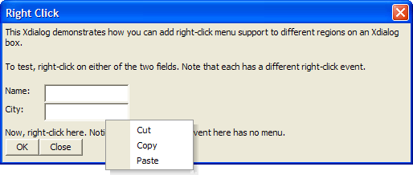

Adding Right-Click Context Menus
The following example shows how to respond to right click events.
ui_dlg_box("Right Click",<<%dlg% {wrap=100} This Xdialog demonstrates how you can add right-click menu support to different regions on an Xdialog box.; {lf}; To test, right-click on either of the two fields. Note that each has a different right-click event.; {lf}; |
The {rightclick=menu1} statement establishes the right-click menu to call for the name field.
{rightclick=menu1} {region} Name: | [.20name]; |
The {rightclick=menu2} statement overrides the previous statement and establishes the right-click menu to call for the city field.
{rightclick=menu2} City: | [.20city]; {endregion}; |
The {rightclick=} statement overrides the previous statement and removes the menu association for the remainder of the dialog box.
{rightclick=} Now, right-click here. Notice that the right-click event here has no menu. ; %dlg%,<<%code% if a_dlg_button = "menu1" then ui_msg_box("Menu1","User right-clicked") a_dlg_button = "" end if if a_dlg_button = "menu2" then menu = <<%a% Cut Copy Paste %a% result = ui_popup_menu(menu) ui_msg_box("Menu2","User selected: " + result) a_dlg_button = "" end if %code%) |

Next
Anchor Buttons - Exact Positioning of Buttons
See Also
{RIGHTCLICK}, Miscellaneous Examples
Limitations
Desktop applications only.